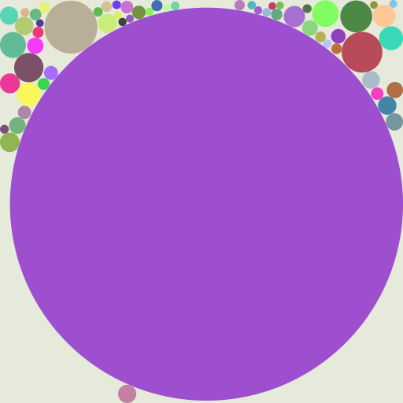
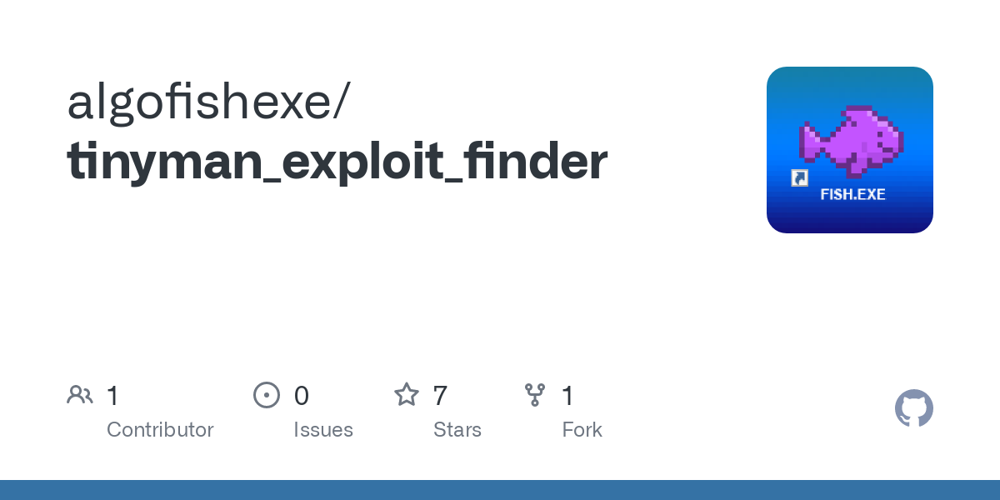
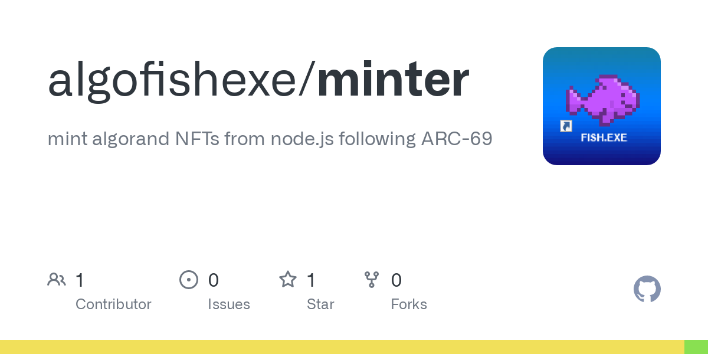

about
Hi, I'm fish.exe. I'm a fullstack developer and artist focused on generative art on the Algorand blockchain. I chose to build on Algorand because it's the only L1 blockchain that has effectively solved the scalability trilemma. Unlike BTC and ETH, Algorand is not an environmental nightmare, and its developer tools are great--the ecosystem just needs more devs building on it.
This is my homepage containing all of the projects that I've built on Algorand so far and my roadmap for future projects. I started this project and identity on Jan 1, 2022.
projects
Algobubbles
Jan 1, 2022 - project link
 Algobubble #25Algobubbles were my genesis project on Algorand. I created a series of 80 bubble scenes using Javascript's canvas tool with a variety of color schemes and patterns.
The algorithm for creating an Algobubble is pretty simple: randomly sized bubbles are placed onto the scene where gravity acts on them until they collide with a border or another bubble. If they fit on the sceen, they remain and another bubble comes. After enough failures to fit a bubble, the image is created.
milestones
- Verified on nftexplorer.app.
- 22 sales for a total of 37 ALGO spent (As of Jan 4, 2022).
tinyman_exploit_finder
Jan 2, 2022 - project link
An exploit was found on Jan 1 that resulted in a ton of ASAs being drained from Tinyman liquidity pools. You can read about the exploit here. About $3 million was stolen in total.
I built this tool in an afternoon to find the addresses of those abusing this exploit. In essence, it works by finding groups of transactions that are transacting with the liquidity pool but have multiple transactions with one token when there should be strictly one transaction per token.
milestones
- Over 31 exploitative transactions found.
- GitHub repo has 7 stars, tweet has 43 RTs and 167 likes.
minter
Jan 2, 2022 - project link
I took the script that I wrote to mint the Algobubbles and open sourced it so that anybody can mass mint NFTs following the ARC-69 community standard for properties.
milestones
- Featured on awesomealgo.com.
- Featured on howtoalgonft.com.
- GitHub repo has 1 star, tweet has 2 RTs and 8 likes.
roadmap
These are my goals for the near future.
ongoing
- release tools to help the ALGO NFT community.
- share knowledge about the ALGO developer world.
- contribute to ALGO DAOs (eg. Coffee Bean DAO).
Q1 2022
- release generative "profile picture" style NFT.
- create "Fish Collective" discord for art x tech enthusiasts.
- release first on-chain generative NFT on Algorand.
EOY 2022
- develop and release P2E game.
- develop on-chain generative NFT platform
- create offline art NFT collection